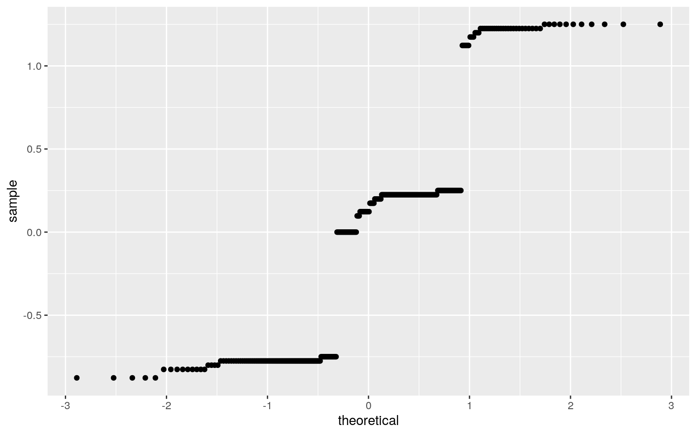

May 13, 2020
#DATASET
library(tidyverse)
library("readxl")
cars <- read.csv("~/cars.csv")
sdata <- read.csv("~/sdatareal.csv")
library(ggplot2)
head(cars)## X speed dist
## 1 1 4 2
## 2 2 4 10
## 3 3 7 4
## 4 4 7 22
## 5 5 8 16
## 6 6 9 10glimpse(cars)## Observations: 50
## Variables: 3
## $ X <int> 1, 2, 3, 4, 5, 6, 7, 8, 9, 10, 11, 12, 13, 14,
15, 16, 17, 18, 19, 20, 21, 22, 23, …
## $ speed <int> 4, 4, 7, 7, 8, 9, 10, 10, 10, 11, 11, 12,
12, 12, 12, 13, 13, 13, 13, 14, 14, 14, 1…
## $ dist <int> 2, 10, 4, 22, 16, 10, 18, 26, 34, 17, 28,
14, 20, 24, 28, 26, 34, 34, 46, 26, 36, 6…cars <- as.data.frame(cars)
head(sdata)## X speed period warning pair ticket
## 1 1 26 1 1 1 yes
## 2 2 26 1 1 1 yes
## 3 3 26 1 1 1 yes
## 4 4 26 1 1 1 yes
## 5 5 27 1 1 1 yes
## 6 6 28 1 1 1 yessdata <- as.data.frame(sdata)
glimpse(sdata)## Observations: 8,437
## Variables: 6
## $ X <int> 1, 2, 3, 4, 5, 6, 7, 8, 9, 10, 11, 12, 13, 14,
15, 16, 17, 18, 19, 20, 21, 22, 23…
## $ speed <int> 26, 26, 26, 26, 27, 28, 28, 28, 28, 29,
29, 29, 29, 29, 29, 29, 29, 30, 30, 30, 3…
## $ period <int> 1, 1, 1, 1, 1, 1, 1, 1, 1, 1, 1, 1, 1, 1,
1, 1, 1, 1, 1, 1, 1, 1, 1, 1, 1, 1, 1, …
## $ warning <int> 1, 1, 1, 1, 1, 1, 1, 1, 1, 1, 1, 1, 1,
1, 1, 1, 1, 1, 1, 1, 1, 1, 1, 1, 1, 1, 1, …
## $ pair <int> 1, 1, 1, 1, 1, 1, 1, 1, 1, 1, 1, 1, 1, 1,
1, 1, 1, 1, 1, 1, 1, 1, 1, 1, 1, 1, 1, …
## $ ticket <fct> yes, yes, yes, yes, yes, yes, yes, yes,
yes, yes, yes, yes, yes, yes, yes, yes, y…#Joining
carspeedfulljoin<-inner_join(cars, sdata, by= c("speed", "speed"), suffix=c("cars", "sdata"))
glimpse(carspeedfulljoin)## Observations: 258
## Variables: 8
## $ Xcars <int> 36, 37, 38, 39, 39, 39, 39, 40, 40, 40,
40, 41, 41, 41, 41, 42, 42, 42, 42, 43, 4…
## $ speed <int> 19, 19, 19, 20, 20, 20, 20, 20, 20, 20,
20, 20, 20, 20, 20, 20, 20, 20, 20, 20, 2…
## $ dist <int> 36, 46, 68, 32, 32, 32, 32, 48, 48, 48, 48,
52, 52, 52, 52, 56, 56, 56, 56, 64, 6…
## $ Xsdata <int> 2101, 2101, 2101, 2102, 3301, 3401, 6824,
2102, 3301, 3401, 6824, 2102, 3301, 340…
## $ period <int> 2, 2, 2, 2, 2, 1, 3, 2, 2, 1, 3, 2, 2, 1,
3, 2, 2, 1, 3, 2, 2, 1, 3, 1, 1, 1, 2, …
## $ warning <int> 1, 1, 1, 1, 1, 2, 1, 1, 1, 2, 1, 1, 1,
2, 1, 1, 1, 2, 1, 1, 1, 2, 1, 2, 2, 1, 2, …
## $ pair <int> 7, 7, 7, 7, 10, 10, 7, 7, 10, 10, 7, 7, 10,
10, 7, 7, 10, 10, 7, 7, 10, 10, 7, 2,…
## $ ticket <fct> yes, yes, yes, yes, yes, yes, yes, yes,
yes, yes, yes, yes, yes, yes, yes, yes, y…Introduction: The dataset I chose for this project is the same dataset I used for project 1. I will be using the joined version of the two datasets for this project. The two data sets were chosen from https://vincentarelbundock.github.io/Rdatasets/datasets.html and are having to due with cars that had been pulled over and whether or not they received a ticket. While this data may seem mundane, I chose it because I believe I may find a strong correlation between an unthought of variable and whether or not a car receieves a ticket. The data I am analyzing contains the main variables speed(how fast the vehicle was going when pulled over), distance(how far the car travel before stopping), period(the time of day the car was pulled over, distinguished by 3, 8 hour periods), warning(whether or not the vechicle received a warning, pair(how many people were in the given vehicle), and ticket (whether or not the vehicle recieved a ticket). Initially, the strongest association I may expect to see is between time period and people in the car, as certain times of day may increase the amount of people traveling together. For example more people may travel together at night due to dinner plans or an evening event. Intutively, the other variables would not seem to have a strong assocation, however I am interested to see if there is an unexpected assocation. The data has 8 variables and 258 observations.
project2dat <- manova(cbind(speed,period,pair)~ticket,data=carspeedfulljoin)
summary(project2dat)## Df Pillai approx F num Df den Df Pr(>F)
## ticket 1 0.32789 41.306 3 254 < 2.2e-16 ***
## Residuals 256
## ---
## Signif. codes: 0 '***' 0.001 '**' 0.01 '*' 0.05 '.' 0.1
' ' 1summary.aov(project2dat)## Response speed :
## Df Sum Sq Mean Sq F value Pr(>F)
## ticket 1 4.01 4.0059 2.1068 0.1479
## Residuals 256 486.77 1.9014
##
## Response period :
## Df Sum Sq Mean Sq F value Pr(>F)
## ticket 1 27.204 27.2038 52.73 4.591e-12 ***
## Residuals 256 132.071 0.5159
## ---
## Signif. codes: 0 '***' 0.001 '**' 0.01 '*' 0.05 '.' 0.1
' ' 1
##
## Response pair :
## Df Sum Sq Mean Sq F value Pr(>F)
## ticket 1 315.95 315.949 44.475 1.578e-10 ***
## Residuals 256 1818.60 7.104
## ---
## Signif. codes: 0 '***' 0.001 '**' 0.01 '*' 0.05 '.' 0.1
' ' 1pairwise.t.test(carspeedfulljoin$speed,carspeedfulljoin$ticket,p.adj="none")##
## Pairwise comparisons using t tests with pooled SD
##
## data: carspeedfulljoin$speed and carspeedfulljoin$ticket
##
## no
## yes 0.15
##
## P value adjustment method: nonepairwise.t.test(carspeedfulljoin$period,carspeedfulljoin$ticket,p.adj="none")##
## Pairwise comparisons using t tests with pooled SD
##
## data: carspeedfulljoin$period and
carspeedfulljoin$ticket
##
## no
## yes 4.6e-12
##
## P value adjustment method: nonepairwise.t.test(carspeedfulljoin$pair,carspeedfulljoin$ticket,p.adj="none")##
## Pairwise comparisons using t tests with pooled SD
##
## data: carspeedfulljoin$pair and carspeedfulljoin$ticket
##
## no
## yes 1.6e-10
##
## P value adjustment method: none#error
1-(.95)^16## [1] 0.5598733.05/16## [1] 0.003125Running a manova to test to see if speed,time period, and group size had a mean difference against ticket status, it seems that there was as the p-value generated was less than 0.05 and was 2.2e-16. After running an manova, an anova was used to test to see which ones of the variables had a mean difference. Time period and group pair were the only variables that had a mean difference while speed did not as the p-value was 0.1479 and the other p-values were below 0.05. After the anova, a pairwise t test was run for speed,period , and pair. Although speed did not show to have a mean difference in the anova test, it was run anyways for fun :). The pairwise t-tests showed that the period and pair variables showed a difference between yes and no ticket status, as they were below 0.05. Speed on the other hand, did not show a difference between yes and no ticket status.
#Randomized Testing
carspeedfulljoin%>%group_by(ticket)%>%summarize(mean_speed=mean(speed))## # A tibble: 2 x 2
## ticket mean_speed
## <fct> <dbl>
## 1 no 24.0
## 2 yes 23.624-23.6## [1] 0.4rand_dist<-vector()
for(i in 1:5000){
Randata<-data.frame(ticket=sample(carspeedfulljoin$ticket),speed=carspeedfulljoin$speed)
rand_dist[i]<-mean(Randata[Randata$ticket=="yes",]$speed)-
mean(Randata[Randata$ticket=="no",]$speed)}
mean(rand_dist>0.4)*2## [1] 0.2752{hist(rand_dist,main="",ylab="");abline(v=0.4,col="red")}A randomized test was used to take a sample of ticket status and pullit 5,000 times and then take the mean of yes and no ticket status of speed were subtracted to find the difference. After running a randomized test, I then found the p-value of a two-tailed test and it was greater than 0.05, as it was 0.2364. I then plotted a histogram to show the null distribution and test statistic. The null hypothesis is that there is no difference in speed in yes and no ticket status, and the alternative hypothesis is that there is a difference in speed in yes and no ticket status. From the randomized test and finding the p-value, we fail to reject the null hypothesis.
#Linear Regression
fitdat <- lm(period~speed*ticket, data=carspeedfulljoin)
coef(fitdat)## (Intercept) speed ticketyes speed:ticketyes
## 3.000000e+00 -3.107139e-16 -6.139303e-01 -2.545601e-02ggplot(fitdat, aes(x=speed,y=period, color=ticket)) +geom_point(shape=1) + geom_smooth(method = "lm") + ggtitle ("Linear Regression Predicting Period with Speed and Ticket Status") + ylab("Time Period") + xlab("Speed")+ labs(color="Ticket Status")
#assumptions
resids<-fitdat$residuals
fitvals<-fitdat$fitted.values
ggplot()+geom_point(aes(fitvals,resids))+geom_hline(yintercept=0, color='red')ggplot()+geom_histogram(aes(resids), bins=20)ggplot()+geom_qq(aes(sample=resids))+geom_qq_line()
#robust standard errors
summary(fitdat)$coef[,1:2] #uncorrected## Estimate Std. Error
## (Intercept) 3.000000e+00 6.5724738
## speed -3.107139e-16 0.2732017
## ticketyes -6.139303e-01 6.6182261
## speed:ticketyes -2.545601e-02 0.2751732#corrected code here
coeftest(fitdat, vcov = vcovHC(fitdat))[,1:2] ## Estimate Std. Error
## (Intercept) 3.000000e+00 3.203062e-13
## speed -3.107139e-16 1.000957e-14
## ticketyes -6.139303e-01 7.581984e-01
## speed:ticketyes -2.545601e-02 3.220238e-02After running a linear regression,the coefficent estimates for speed was -3.107139e-16, yes for ticket status was -6.139303e-01 and the speed:yes for ticket status was -2.545601e-02. I then plotted Speed vs Time Period in yes and no ticket status and saw that there was a higher interaction in yes than no ticket status. I then checked assumptions, and every single one was failed. The assumption graphs did not exhibit, homoskedacity, normality, or linearity, and were very weird. Thus, I am taking the results with a grain of salt.
#Bootstrapped Standard Error
library(ggplot2)
boot<-carspeedfulljoin[sample(nrow(carspeedfulljoin),replace=TRUE),]
samp_distn<-replicate(5000, {
boot<-carspeedfulljoin[sample(nrow(carspeedfulljoin),replace=TRUE),]
fitdat2<-lm(pair~speed*ticket,data=carspeedfulljoin)
coef(fitdat2)
})
samp_distn%>%t%>%as.data.frame%>%summarize_all(sd)## (Intercept) speed ticketyes speed:ticketyes
## 1 0 0 0 0#Logistic Regression
install.packages('cluster')
library(cluster)
library(tidyverse)
fitdat2<-glm(ticket~period+speed+pair, data=carspeedfulljoin, family="binomial")
coeftest(fitdat2)##
## z test of coefficients:
##
## Estimate Std. Error z value Pr(>|z|)
## (Intercept) 3.3569e+02 1.4561e+05 0.0023 0.9982
## period -7.0423e+01 2.0292e+04 -0.0035 0.9972
## speed 2.6762e-02 5.1175e+03 0.0000 1.0000
## pair -1.4652e+01 4.7412e+03 -0.0031 0.9975#confusion matrix
prob <- predict(fitdat2,type="response")
table(predict=as.numeric(prob>.5),yes=carspeedfulljoin$warning)%>%addmargins## yes
## predict 1 2 Sum
## 0 9 11 20
## 1 187 51 238
## Sum 196 62 258class_diag<-function(prob,yes){
tab<-table(factor(prob>.5,levels=c("FALSE","TRUE")),yes)
acc=sum(diag(tab))/sum(tab)
sens=tab[2,2]/colSums(tab)[2]
spec=tab[1,1]/colSums(tab)[1]
ppv=tab[2,2]/rowSums(tab)[2]
if(is.numeric(yes)==FALSE & is.logical(yes)==FALSE) yes<-as.numeric(yes)-1
#CALCULATE EXACT AUC
ord<-order(prob, decreasing=TRUE)
prob <- prob[ord]; yes <- yes[ord]
TPR=cumsum(yes)/max(1,sum(yes))
FPR=cumsum(!yes)/max(1,sum(!yes))
dup<-c(prob[-1]>=prob[-length(prob)], FALSE)
TPR<-c(0,TPR[!dup],1); FPR<-c(0,FPR[!dup],1)
n <- length(TPR)
auc<- sum( ((TPR[-1]+TPR[-n])/2) * (FPR[-1]-FPR[-n]) )
data.frame(acc,sens,spec,ppv,auc)
}
class_diag(prob,carspeedfulljoin$ticket)## acc sens spec ppv auc
## yes 1 1 1 1 1#ROCplot
library(plotROC)
carspeedfulljoin$logit <- predict(fitdat, data=carspeedfulljoin, type="response")
carspeedfulljoin$ticket <-factor(carspeedfulljoin$ticket, levels=c("yes","no"))
carspeedfulljoinlog <- carspeedfulljoin%>% mutate(ticket=ifelse(ticket=="yes","yes","no"))
ggplot(carspeedfulljoinlog, aes(logit,fill=ticket))+geom_density(alpha=.3)+geom_vline(xintercept = 0,lty=2)+ggtitle("Density of log-odds by Ticket Status")RocPlot <- ggplot(carspeedfulljoin)+geom_roc(aes(d=ticket,m=prob),n.cut=0)
RocPlotcalc_auc(RocPlot)## PANEL group AUC
## 1 1 -1 1#10-fold
set.seed(1234)
k=10
prodata<-carspeedfulljoin[sample(nrow(carspeedfulljoin)),] #randomly order rows
folds<-cut(seq(1:nrow(carspeedfulljoin)),breaks=k,labels=FALSE) #create folds
diags<-NULL
for(i in 1:k){
## Create training and test sets
train<-prodata[folds!=i,]
test<-prodata[folds==i,]
yes<-test$ticket
## Train model on training set
fitdat3<-glm(ticket~.,data=carspeedfulljoin,family="binomial")
probs2<-predict(fitdat3,newdata = test,type="response")
## Test model on test set (save all k results)
diags<-rbind(diags,class_diag(probs2,yes))
}
apply(diags,2,mean)## acc sens spec ppv auc
## 1.0 NaN 1.0 NaN 0.8A logistic regression was run and this time the intercepts tell us the interactions of speed, time period, and group size in a vehicle that receieved a ticket. The intercepts for period was -7.0423, speed was 2.6762e-02, and pair was -1.4652. The accuracy (1), sensitivity (1), specificity (1), and auc (1) was also computed. The auc is good since it is 1(the highest value) However, every value computed was 1 and is thus a little suspect. After running the 10-fold, the auc acutally decreased in value to 0.8.
#LASSO
library(glmnet)
x <- model.matrix(fitdat)[,-1]
y<-as.matrix(carspeedfulljoin$ticket)
cv<-cv.glmnet(x,y,family='binomial')
lassodat<-glmnet(x,y,family='binomial',lambda=cv$lambda.1se)
coef(lassodat)## 4 x 1 sparse Matrix of class "dgCMatrix"
## s0
## (Intercept) .
## speed 0
## ticketyes .
## speed:ticketyes .set.seed(1234)
k=10
prodata2<-carspeedfulljoin[sample(nrow(carspeedfulljoin)),]
folds<-cut(seq(1:nrow(carspeedfulljoin)),breaks=k,labels=F)
diags<-NULL
for(i in 1:k){ # FOR EACH OF 10 FOLDS
train2<-prodata2[folds!=i,] #CREATE TRAINING SET
test2<-prodata2[folds==i,] #CREATE TESTING SET
yes2<-test2$ticket
probs3<- predict(fitdat,newdata=test2, type="response")
diags<-rbind(diags,class_diag(probs3,yes2))
}
apply(diags,2,mean)## acc sens spec ppv auc
## 0.07707692 NaN 0.00000000 0.07707692 0.80000000A lasso regression was done and the auc was actually lower than then when I ran the original logistic regression. The auc here is 0.8 and the one above was 1. This was after running the 10-fold as well, and the LASSO accuracy(0.07707692) was not as high when running the logistic regression. Overall my data was very weird which likely explains why the numbers generated were strange / not expected.